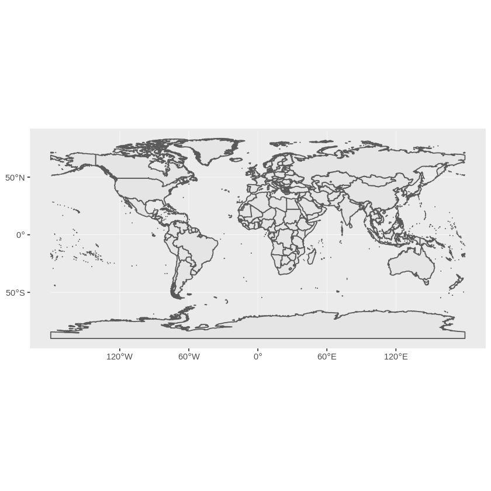
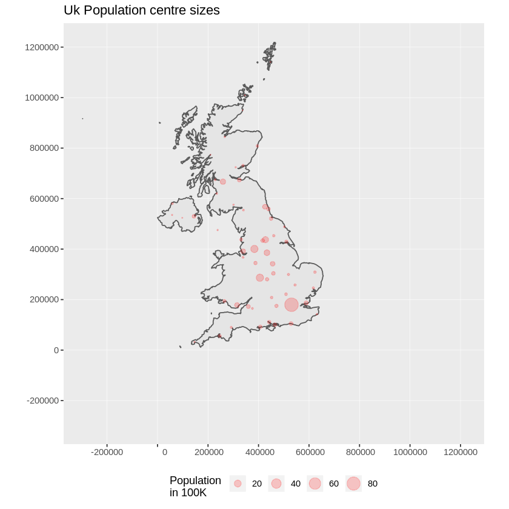

Guide de démarrage avec R¶
R est un environnement logiciel libre pour le calcul statistique et la création de graphiques.
Ce guide de démarrage rapide décrit comment :
- utiliser R pour l’arithmétique simple
- charger des données à partir d’un shapefile et les cartographier
- faire une transformation de coordonnées
- tracer quelques points sur une carte
Démarrer R¶
R est essentiellement un programme en ligne de commande, même s’il existe des interfaces graphiques. Vous tapez une ligne de code dans l’invite, appuyez sur Entrée et l’interprète R évalue et affiche le résultat.
Astuce
Don’t fear the command line - it is a source of great power. Using the up and down arrows to recall commands so you can edit mistakes. Hit CTRL-C if get stuck and you should get the prompt back.
Choose . A terminal window opens running R.
You can start with simple arithmetic.
> 3*2
[1] 6
> 1 + 2 * 3 / 4
[1] 2.5
> sqrt(2)
[1] 1.414214
> pi * exp(-1)
[1] 1.155727
A full range of arithmetic, trigonometric, and statistical functions are built-in, and thousands more are available from packages in the CRAN archive.
The main prompt in R is >, but there is also the continuation prompt +, which
appears if R expects more input to make a valid expression. You’ll see this if you
forget a closing bracket or parenthesis.
> sqrt(
+ 2
+ )
[1] 1.414214
Building data¶
Vous vous demandez peut-être ce que le mystérieux «un» dans les crochets carrés fait dans la sortie. Cela vous dit que le résultat est un nombre. R peut stocker des choses dans des vecteurs unidimensionnels, des matrices bidimensionnelles et des tableaux multidimensionnels. Il existe de nombreuses fonctions qui peuvent générer ces choses. Voici une séquence simple:
> seq(1, 5, len=10)
[1] 1.000000 1.444444 1.888889 2.333333 2.777778 3.222222 3.666667 4.111111
[9] 4.555556 5.000000
Maintenant, vous pouvez voir que le [9] nous dit que 4.555 est la neuvième valeur dans le vecteur.
Si vous construisez une matrice, vous obtenez des étiquettes de ligne et de colonne :
> m = matrix(1:12, 3, 4)
> m
[,1] [,2] [,3] [,4]
[1,] 1 4 7 10
[2,] 2 5 8 11
[3,] 3 6 9 12
Les éléments de matrices peuvent être extraits à l’aide de parenthèses carrées, avec des indices de ligne et de colonne séparés par des virgules. Laissez un index vide pour obtenir une rangée entière comme vecteur. Utilisez un index vectoriel pour obtenir plusieurs lignes ou colonnes comme matrice plus petite :
> m[2,4]
[1] 11
> m[2,]
[1] 2 5 8 11
> m[,3:4]
[,1] [,2]
[1,] 7 10
[2,] 8 11
[3,] 9 12
Les cadres de données sont des structures de données qui reflètent le type de structure trouvée dans un SGBDR comme PostgreSQL ou MySQL. Chaque ligne peut être considérée comme un enregistrement, avec des colonnes étant comme des champs dans une base de données. Comme dans une base de données, chaque champ doit être du même type pour chaque enregistrement.
À bien des égards, ils fonctionnent comme des matrices, mais vous pouvez également obtenir et définir les colonnes par nom en utilisant notation $:
> d = data.frame(x=1:10, y=1:10, z=runif(10)) # z is 10 random numbers
> d
x y z
1 1 1 0.44128080
2 2 2 0.09394331
3 3 3 0.51097462
4 4 4 0.82683828
5 5 5 0.21826740
6 6 6 0.65600533
7 7 7 0.59798278
8 8 8 0.19003625
9 9 9 0.24004866
10 10 10 0.35972749
> d$z
[1] 0.44128080 0.09394331 0.51097462 0.82683828 0.21826740 0.65600533
[7] 0.59798278 0.19003625 0.24004866 0.35972749
> d$big = d$z > 0.6 # d$big is now a boolean true/false value
> d[1:5,]
x y z big
1 1 1 0.44128080 FALSE
2 2 2 0.09394331 FALSE
3 3 3 0.51097462 FALSE
4 4 4 0.82683828 TRUE
5 5 5 0.21826740 FALSE
> d$name = letters[1:10] # create a new field of characters
> d[1:5,]
x y z big name
1 1 1 0.44128080 FALSE a
2 2 2 0.09394331 FALSE b
3 3 3 0.51097462 FALSE c
4 4 4 0.82683828 TRUE d
5 5 5 0.21826740 FALSE e
Loading map data¶
Il existe de nombreux paquets pour la manipulation des données spatiales et des statistiques. Certains sont inclus ici, et certains peuvent être téléchargés à partir du CRAN.
Ici, nous allons charger deux shapefiles - les frontières du pays et des lieux peuplés à partir des données Natural Earth. Nous utilisons deux modules d’add-on pour obtenir la fonctionnalité spatiale :
> library(sf) # Simple Features manipulation Library
> library(ggplot2) # Plotting library
> countries <- st_read(dsn = "~/data/natural_earth2/ne_10m_admin_0_countries.shp")
> places <- st_read(dsn = "~/data/natural_earth2/ne_10m_populated_places.shp")
> ggplot(countries) + geom_sf()
Cela nous donne une carte simple du monde:
Lorsqu’un jeu de données OGR est lu dans R de cette façon, nous retrouvons un objet qui se comporte de plusieurs façons comme un cadre de données. Nous pouvons utiliser le champ admin pour découper les données mondiales et n’obtenir que le Royaume-Uni:
> uk <- countries[countries$admin == 'United Kingdom',]
> ggplot(uk) + geom_sf()

Cela semble un peu écrasé à tous ceux qui vivent ici, puisque nous sommes plus familiers avec un système de coordonnées centrée sur nos latitudes. Actuellement, l’objet n’a pas de système de coordonnées qui lui est assigné.
Nous avons besoin d’attribuer un CRS à l’objet avant de pouvoir le transformer avec la fonction sf::st-transform du paquet sf. Nous transformons en EPSG:27700 qui est le système de grille pour la Grande Bretagne de l’Ordnance Survey :
> ukos <- st_transform(uk,27700)
> ggplot(ukos) + geom_sf()
Cela trace la carte de base des données transformées. Maintenant, nous voulons ajouter quelques points à partir de l’ensemble de données de lieux peuplés. Encore une fois, nous créons un sous-ensemble des points que nous voulons et les transformons dans la grille de référence de l’Ordnance Survey :
> ukpop <- places[places$SOV0NAME == 'United Kingdom',]
> ukpop <- st_transform(ukpop,27700)
Nous ajoutons ces points à la carte de base, en faisant varier leur taille par la racine carrée de la population (parce que cela rend un symbole avec une zone proportionnelle à la population), définissons la couleur à rouge et le caractère de traçage à un rond plein:
> ggplot() +
> geom_sf(data = ukos) + # add UK shape to the map
> geom_sf(data = ukpop, # add the Populated places
> aes(size = ukpop$POP_MAX/100000), # fix size of points (by area)
> colour = 'red', alpha = 1/5) + # set points colour and transparency
> coord_sf(crs = 27700, datum= sf::st_crs(27700), # set a bounding box
> xlim = st_bbox(ukos[c(1,3)]), # for the map
> ylim = st_bbox(ukos[c(2,4)])
> ) +
> ggtitle('Uk Population centre sizes') + # set the map title
> theme(legend.position = 'bottom') + # Legend position
> scale_size_area(name = 'Population \nin 100K') # 0 value means 0 area + legend title
et notre image finale apparaît:
Astuce
To quite R, type q() and hit return. R will ask you if you want to save your workspace as an R data image file. When you start R again from a directory with a .RData file it will restore all its data from there.
Vignettes¶
In the past, the documentation for R packages tended to be tersely-written help pages
for each function. Now package authors are encouraged to write a “vignette” as a friendly
introduction to the package. If you run the vignette() function with no arguments
you will get the list of those vignettes on your system. Try vignette("sf1") for a
slightly technical introduction to the R spatial package.
Ensuite ?¶
For general information about R, try the official Introduction to R or any of the documentation from the main R Project page.
For more information on spatial aspects of R, the best place to start is probably the R Spatial Task View
You might also want to check out the R-Spatial page.